Neutrino Oscillation And Master Equation¶
Question
Why do we think about master equation?
Answer
The terms we care the most are the populations of the states. One of the treatment of quantum master equation is to write down the closed equations for population terms only. A very beautiful example is the projection method invented by Zwawzig and Nakajiwa.
WHY
Why do you need a master equation approach? IDK.
Quantum Master Equation¶
Projection Technique
First of all define a diagonalizing operator 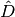 which just keeps the diagonal elements and simply drops the off diagonal elements. We see that 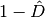 will eliminate all diagonal elements.
We can define the diagonalized density matrix as 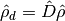 and off-diagonalized density matrix as 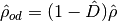. As an application,
Starting from the von Neumann equation,
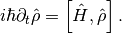
By using the Liouville operator,
Apply and to the von Neumann equation,
Use the relation that , we have

Solve the second equation using Green function technique,
Hint
Recall that the solution for
is
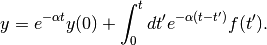
Insert this solution to the equation of 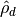,
What happened to the blue term? It disapears when we apply the initial random phase condition.
When it happens we get our closed master equation for , which is an equation for the probability.
In our case of neutrinos, random phase condition is not really needed since we usually deal with the situation that electron neutrinos are appearant only.
In details, we have such a density matrix,
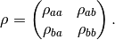
The quantum master equation we would like to use is
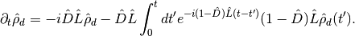
Vacuum Oscillation Master Equation¶
Using this projection method, one can find out the master equation for vacuum oscillations.
Pauli Matrices
We will use Pauli matrices in the following part. Here is a review of them.
Pauli Matrices,
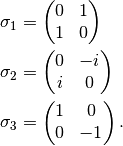
Commutation Relations,
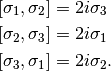
The general form is
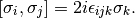
All the Pauli matrices plus identity form a complate basis for 2 by 2 matrices. Vacuum oscillation Hamiltonian is
where 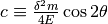 and similarly for s.
Liouville Operator
Liouville operator in quantum mechanics is
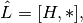
where the asterisk is the slot for an operator.
In the case of vacuum oscillation, we can calculate the following results,
Notice that has diagonal terms only. It will dispear when we apply 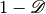 which removes the diagonal elements, i.e.,
Diagonalized density matrix is
Note
Actually for such a system. We’ll see the proof of this later.
Apply 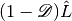 we get
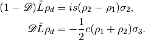
Exponential Operator
Exponential operator is understood when series expansion is done,
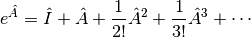
Recall that the master equation is
So we need to calculate
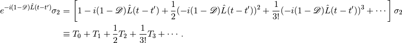
We will calculate it term by term and find the pattern.
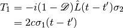
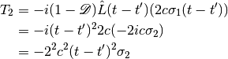
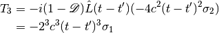
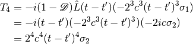
Carry on this calculation we can infer that
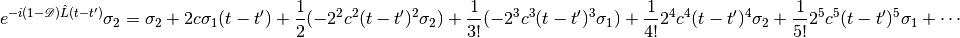
Taylor Series
Taylor series of 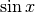 and 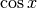 around  are
are
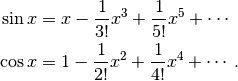
Now we see that
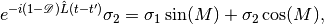
where 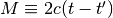.
The master equation we need is
![\partial_t \rho_d(t) &= \frac{1}{2}ic(\rho_1+\rho_2)\sigma_3 - \mathscr D \hat L \int_0^t dt' i s (\rho_2-\rho_1) \left(\sigma_1 \sin(2c(t-t')) + \sigma_2 \cos(2c(t-t'))\right) \\
& = \frac{1}{2}ic(\rho_1+\rho_2)\sigma_3 - \mathscr D \hat L i s \int_0^t dt' (\rho_2-\rho_1) \left(\sigma_2 \cos(2c(t-t'))\right) \\
& = \frac{1}{2}ic(\rho_1+\rho_2)\sigma_3 - i s G(t) \mathscr D \hat L \sigma_2 \\
& = \frac{1}{2}ic(\rho_1+\rho_2)\sigma_3 + 2 s^2 G(t) \sigma_3 \\
& = \frac{1}{2}ic(\rho_1+\rho_2)\sigma_3 + 2 s^2 \int_0^t dt' (\rho_2-\rho_1) \sigma_3 \cos(2c(t-t')) \\
& = \frac{1}{2}ic(\rho_1+\rho_2)\sigma_3 + 2 s^2 \int_0^t dt' \left( -2\rho_d(t') + (\rho_1+\rho_2) \mathbf I \right) \cos(2c(t-t')) \\
& = \frac{1}{2}ic\sigma_3 + 2 s^2 \int_0^t dt' \left( -2\rho_d(t') + \mathbf I \right) \cos(2c(t-t'))](_images/math/69876b7b8bae53218a14519295118c94e793d840.png)
In the calculation, 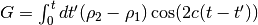.
Plug in the definitions of c and s, we have
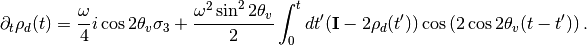
This result shows that the equations of different elements are decoupled. This is very important.
What to Do?
I don’t see anything good about this method. What to do next? I can predict that it’s also won’t cost a lot to solve the MSW effect. But what’s the point? These problems are not very hard to solve even using wave function method.
I am just leaving this result here and move on to other topics.
Neutrino Oscillation in Matter - A Possible Master Equation Approach¶
Self Interaction Between Neutrinos¶
The neutrino-neutrino interaction Hamiltonian involves the density matrix, which makes it very hard to find a closed equation.
Refs & Notes¶
Some papers actually use mater equation for its simplicity in physical meanings.
- Burgess, C. P., & Michaud, D. (1997). Neutrino Propagation in a Fluctuating Sun. Annals of Physics, 256(1), 1–38. doi:10.1006/aphy.1996.5660
- Bamert, P., Burgess, C. P., & Michaud, D. (1997). Neutrino Propagation Through Helioseismic Waves, 27. doi:10.1016/S0550-3213(97)00672-X